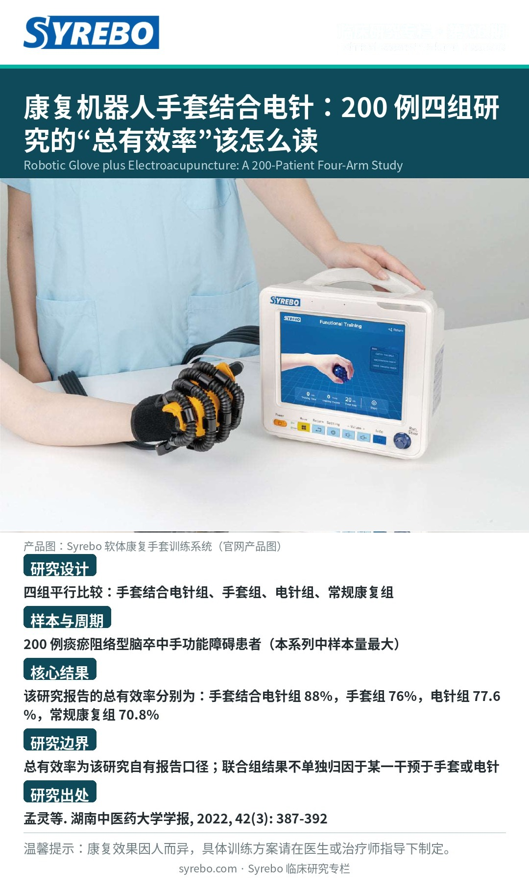

第 06 期 · 图片版
康复机器人手套结合电针：200 例四组研究的"总有效率"该怎么读

研究出处：孟灵、杨松、钟青华、王瑞安、林伟弟、尹刚刚、常小荣、蒋学余。《康复机器人手套结合电针治疗痰瘀阻络型脑卒中手功能障碍患者的临床研究》。《湖南中医药大学学报》，2022，42（3）：387-392。
原文页面研究边界：总有效率为该研究自有报告口径；联合组结果不单独归因于某一干预。
温馨提示：康复效果因人而异，具体训练方案请在医生或治疗师指导下制定。
阅读中文全文Read in English